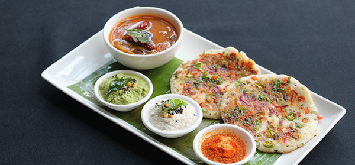

Classic Indian Uttapam

Description
Uttapam is a South Indian breakfast made with fermented lentil & rice batter. These pancakes are known as uttapam. They can be made with different toppings. Uttapam are served with chutney, pickle or podi.
Ingredients
- 1/2 cup urad dal
- 2 tablespoon chana dal
- 2 cup rice
- 1/2teaspoon methi seeds
- 1/2 cup thick poha
- 1/2teaspoon salt(non iodized salt)
- 1 & 1/2cup water
- 2 to 3 tablespoon oil
- one large onion
- 1 medium tomato
- 1/2cup carrot
- 2 to 3 green chillies
- 1/4cup coriander leaves
Instruction to Prepare
- Add urad dal, chana dal and methi seeds to a large bowl and rinse thrice. Pour fresh water and soak them for 4 to 5 hours.
- In another bowl, rinse rice and soak it well for 4 to 5 hours.
- Add poha to a small bowl & rinse it once. Then soak it in 1/4 cup water at least 15 mins before blending.
- Drain the water from dal and add it to a grider jar along with soaked poha.
- Pour 3/4 cup water and grind to a thick & frothy batter. It has to be of pouring consistency and not runny. If the batter is too thick pour another 2 to 4 tbsps water and grind. Transfer this to the bowl. Ensure the batter doesn't become hot or warm while blending.
- Drain water from teh rice and add it to the grinder. Pour 1.2 cup water.
- Blend until smooth. Transfer to the same urad dal batter bowl and add salt.
- If the weather is too hot then avoid adding salt at this stage. Add it after fermentation.
- After mixing the consistency of the uttapam batter must be thick & purable but not be too thick or too runny.
- Cover and rest in a warm place overnight or until the batter rises. If you live in a cold region, then you may ferment the batter in a instant pot with the yogurt setting (low). Depending on the weather it takes anywhere from 8 to 16 hours.
- Do not oover ferment else the batter turns sour. After fermentation the batter rises and aerates. You will see bubbles over the batter much like the dosa batter.
How to Make Uttapam
- When the pan is hot enough, pour a ladle full of batter in the center of the hot pan. We usually do not spread it as it does a bit on its own. If needed spread a bit gently.
- Lower the heat and sprinkle the toppings all over the uttapam. Sprinkle oil around the edges and over the onions.
- When the base is firm, flip it and cook on the other side until it is cooked well. Cook on a medium flame at this stage as it needs to cook from inside.
- Cook the toppings to suit your liking - caramelized or crunchy. Set aside and make the next one.
- Serve onion uttapam with chutney or sambar or sprinkle podi.